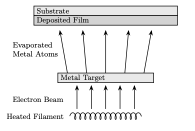
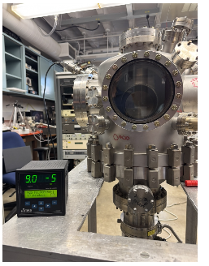
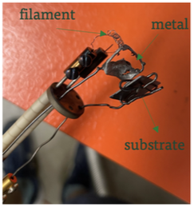
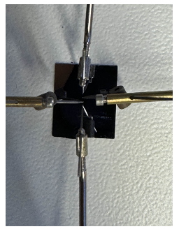

Electron Beam Evaporator
Abstract
Physical Vapor Deposition (PVD) is a cornerstone of nanotechnology, yet access to specialized deposition equipment is often a bottleneck for departmental research. As part of a collaborative group project, we addressed the absence of such facilities at Missouri S&T by assembling, commissioning, and characterizing a custom electron-beam (e-beam) deposition chamber. This system utilizes thermionic emission from a tantalum filament to generate a high-energy electron beam, which is then accelerated and steered toward a target material to induce evaporation in a high-vacuum environment. The project involved the integration of a multi-stage vacuum stack, the development of beam control electronics, and the validation of the system through the deposition of aluminum thin films. By characterizing the resulting films via ellipsometry and conductivity measurements, the group successfully established a functional research tool capable of supporting the fabrication of advanced quantum and electronic devices.
Objective

- To assemble a functional e-beam deposition chamber from discrete vacuum and electronic components for the Physics department.
- To achieve and maintain high-vacuum base pressures (below 10^-7 Torr) necessary for high-purity thin-film growth.
- To develop stable beam steering and power ramping protocols to ensure uniform material evaporation and deposition.
- To validate the system by depositing and characterizing the optical and electrical properties of nanometer-scale thin films.
Methodology
Vacuum Infrastructure and Assembly:

- Assembled a stainless-steel vacuum chamber using pre-prepared components, ensuring all seals were helium leak-tested.
- Integrated a two-stage pumping system: a dry (oil-free) scroll pump for initial roughing and a turbomolecular pump for reaching high-vacuum regimes.
- Monitored internal pressure using high-vacuum gauges to verify base pressures as low as 4.13 × 10^-8 Torr.
E-Beam Source and Control Development:

- Configured an electron gun using thermionic emission from a tantalum filament.
- Developed control logic for filament current and accelerating bias voltage to maintain a stable beam.
- Designed and implemented an electrostatic focusing system to confine the beam to the center of the crucible pocket.
- Prototyped a solenoid coil for magnetic beam deflection to allow for future rastering and heat load management.
Deposition and Thin-Film Characterization:

- Performed deposition runs using aluminum targets on silicon and glass substrates.
- Utilized an ellipsometer to measure film thickness, reflectivity, and polarization, identifying films on the scale of ~1214 Å.
- Conducted conductivity testing using a lock-in amplifier and a four-point probe method to assess the electrical quality of the deposited layers.
Results and Discussion
- The system successfully attained a high-vacuum base pressure of 5×10^-8 Torr in an empty chamber, which is critical for preventing film contamination.
- Deposition tests confirmed the ability to grow thin films, though initial characterization showed some unevenness in coverage, highlighting the need for refined beam steering.
- Conductivity and polarization measurements confirmed that the deposited aluminum maintained its metallic properties, validating the system's effectiveness for circuit fabrication.
Conclusion
- The group successfully delivered a functional e-beam deposition chamber that provides a new capability for the department's experimental toolbox.
- This project laid the groundwork for the in-house fabrication of superconducting Josephson junctions, demonstrating a viable pathway for domestic quantum hardware production.